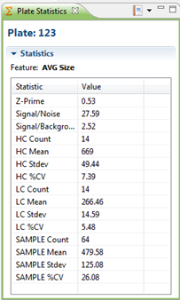

The Plate Statistics view shows various statistics about the currently selected plate.
To open the Plate Statistics View, go to Window > Show View > Other > Plate Statistics.

The statistics that are displayed, are always for the active feature, i.e. the feature currently selected in the Feature Selector.